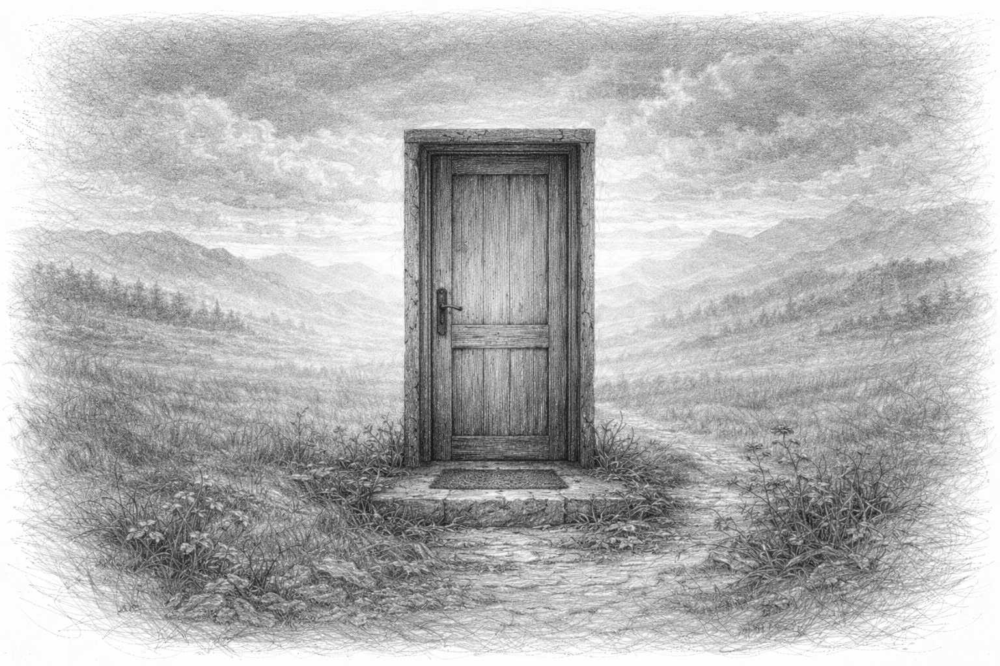

Aku rasa, setiap manusia adalah pengumpul kehilangan yang ulung. Kita berjalan sembari menenteng tas-tas berisi kepingan kaca atau sekadar harapan yang layu sebelum mekar. Sewaktu-waktu ada kalanya di mana kita ingin mengutuk perasaan ini; seperti sebuah amukan di relung hati yang membuat dada terasa sesak, seolah oksigen tidak segampang itu untuk kita gapai.
Namun, apakah kita pernah benar-benar sampai pada kata “selesai”?
Satu hari, kita bangun dengan perasaan ringan, merasa telah berhasil menjabat tangan dengan takdir dan berkata, “selesai.” Kita melangkah dengan tegak, mengira badai telah berlalu. Namun, esoknya, sebait lirik lagu di radio, atau sekadar warna langit yang sendu bisa menyeret kita kembali ke dasar palung yang sama. Perasaan itu datang lagi, lebih riuh dan lebih menuntut.
Maka aku mulai bertanya-tanya: Apakah luka ini akan benar-benar sembuh hingga tak berbekas? Ataukah sebenarnya kita tidak pernah sembuh? Mungkin kita hanya tumbuh menjadi lebih kuat untuk memanggulnya. Kita tidak sedang membuang beban, kita hanya sedang melatih jiwa kita agar lebih terbiasa.
Dan aku rasa, “sembuh” hanyalah istilah untuk sebuah kondisi di mana kita sudah siap sedia. Siap sedia bahwa kehilangan berikutnya pasti akan datang, dan siap sedia untuk tidak hancur berkeping-keping saat hal terburuk itu benar-benar terjadi. Kita tidak melupakan rasa sakitnya, kita hanya belajar bagaimana cara bertahan ditengah badainya.